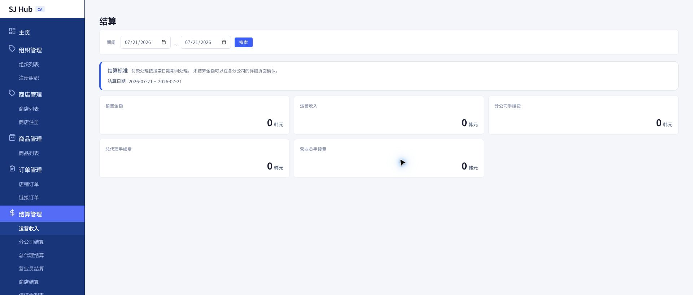
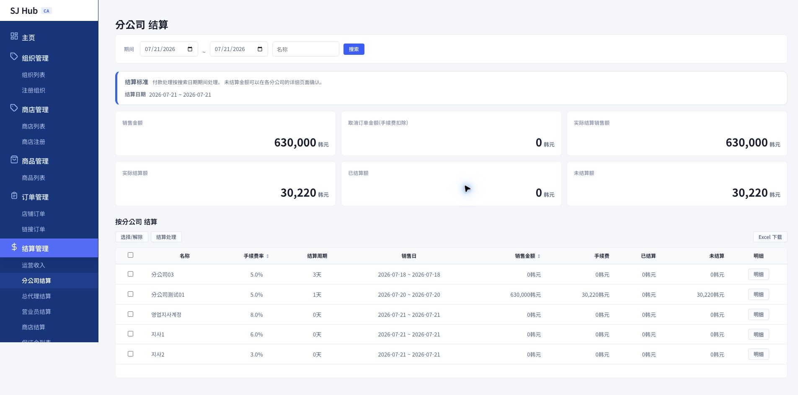
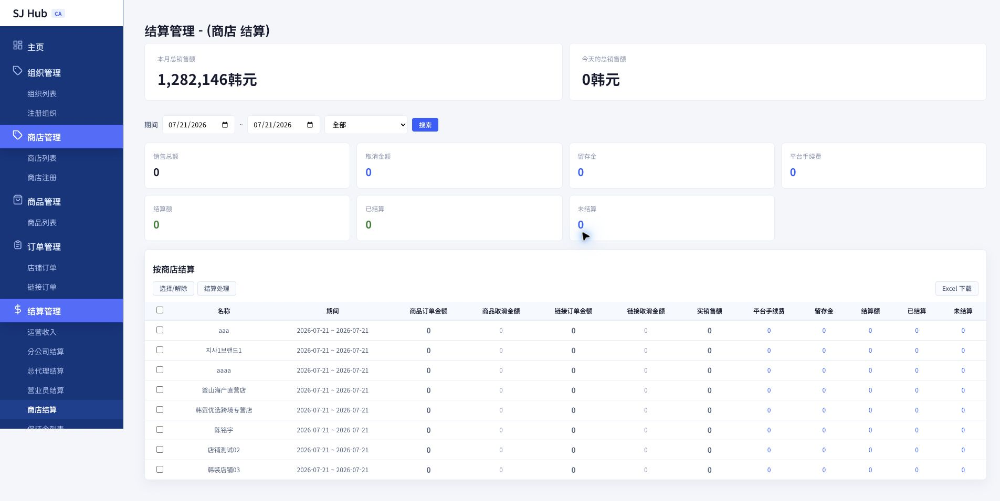
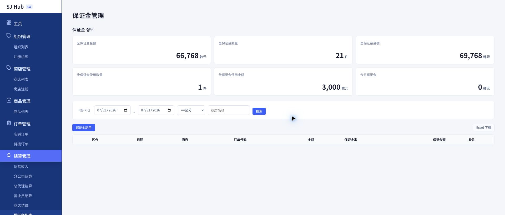
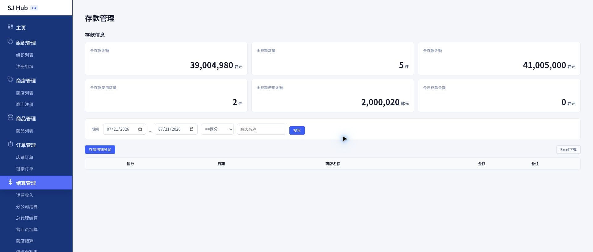

| 받는 주체 | 계산 방법 |
|---|---|
| 상점 실지급액 | 결제금액 − 플랫폼수수료 − 유보금 |
| 총괄대리점·유통업체 수수료 | 각 조직에 설정된 고정 요율을 그대로 (조직별 독립 정산) |
| 운영사(CA) 수익 | 플랫폼수수료 − PG결제수수료 − 영업조직 요율 합계 |
조직별 수수료란 — 예전의 캐스케이드(차등분배) 계산은 없어졌습니다. 총괄대리점 2%, 유통업체 1%로 설정되어 있다면, 각 조직은 설정된 비율을 그대로 자기 몫으로 가져갑니다 — 상위·하위 조직끼리 서로의 몫을 빼고 나누는 계산이 필요 없습니다.
유보금·예치금의 세부 규칙, 취소매출 차감, 반올림 규칙, 종합 계산 예시까지 더 자세한 내용은 부록 · 정산 계산 공식 안내서에서 확인하세요.

💡 이 화면은 요약 전용입니다. 조직·상점별 세부 내역은 옆의 다른 탭에서 확인하세요.

💡 "Excel 다운로드" 버튼으로 선택한 항목을 엑셀로 내려받을 수도 있습니다.



| 항목 | 유보금(保证金) | 예치금(存款) |
|---|---|---|
| 적립(입금) | 매출 발생시 시스템 자동 | CA가 직접 등록 |
| 사용(차감) | CA가 직접 등록 | CA가 직접 등록 |
핵심 차이 — 유보금은 적립이 자동이라 "사용"만 등록하면 되지만, 예치금은 등록창의 "구분" 항목에서 입금과 사용 두 방향을 CA가 직접 선택해서 모두 등록해야 합니다. 등록창 항목(상점명·구분·날짜·금액·비고)과 저장 방식은 유보금 등록창과 동일합니다.